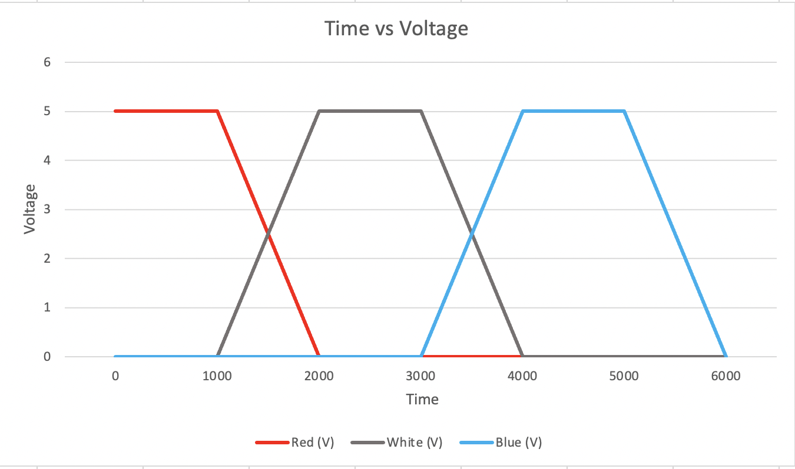

Code Snippet
int ledPin = 11; // LED connected to digital pin 11
int ledPin2 = 10; // LED connected to digital pin 10
int ledPin3 = 5; // LED connected to digital pin 5
int buttonPin = 2; // button connected to digital pin 2
// initializes the button state
int buttonState = 0;
void setup() {
// initializes the button as an input
pinMode(buttonPin, INPUT);
}
void loop() {
// fade in from min to max in increments of 5 points:
buttonState = digitalRead(buttonPin); // read the state of the pushbutton value
if (buttonState == HIGH) { // check if the pushbutton is pressed
fadeEffect(); // perform the fading effect
}
}
void fadeEffect() {
// fade in from min to max in increments of 5 points:
for (int fadeValue = 0; fadeValue <= 255; fadeValue += 5) {
analogWrite(ledPin, fadeValue); // fades LED connected to digital pin 11 on
analogWrite(ledPin2, fadeValue); // fades LED connected to digital pin 10 on
analogWrite(ledPin3, fadeValue); // fades LED connected to digital pin 5 on
delay(30);
}
// fade out from max to min in increments of 5 points:
for (int fadeValue = 255; fadeValue >= 0; fadeValue -= 5) {
analogWrite(ledPin, fadeValue); // fades LED connected to digital pin 11 off
analogWrite(ledPin2, fadeValue); // fades LED connected to digital pin 10 off
analogWrite(ledPin3, fadeValue); // fades LED connected to digital pin 5 off
delay(30);
}
}
Additional Questions
Question 1

Graph representing voltage across LED of analogWrite(led, 64), analogWrite(led, 128),
and analogWrite(led, 255).
Question 2
Given my schematic, circuit, and firmware, I believe my current could run
for around 45.71 hours if powered by a 1200 mAh battery. This is because
the battery life is calculated as:
\[
\text{battery capacity} = 1200 \, \text{mAh} = 1.2 \, \text{Ah}
\]
\[
\text{current draw} = 8.75 \, \text{mA} \times 3
\]
\[
\frac{{1.2 \, \text{Ah}}}{{26.25 \times 10^{-3} \, \text{A}}} \approx 45.71 \, \text{hrs}
\]